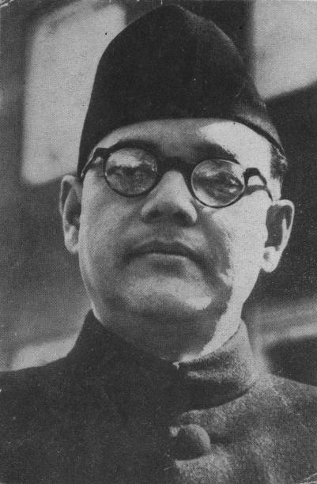

As the nation pays tributes to this great leader on the occasion of his 125th birth anniversary it is appropriate to revisit the life, philosophy and sacrifice of Netaji.

Netaji Subhas Chandra Bose
A Tribute
As the nation pays tributes to this great leader on the occasion of his 125th birth anniversary it is appropriate to revisit the life, philosophy and sacrifice of Netaji.
Netaji Subhas Chandra Bose
He was born in Cuttack after four decades of the unforgettable robust sepoy mutiny of 1857 when the British rule was at its prime and India and Indians were struggling to maintain their self esteem.
As a child Netaji was a great academic success and was selected for the prestigious ICS in early 20th century when very few Indians could get into the prestigious civil services. Now this is what we call an irony in a person's life, patriotic Bose could not work under the British yoke, it seemed proposterous to him.
“ No real change in history has been achieved by discussions”, these words of Netaji were proven by his own action of resigning from the post off an ICS and signing as a member of Indian National Congress.
As a leader totally focussed on getting freedom for his country, Bose was not averse to following the path of armed conflict to oust the British from his country. The British government was unable to browbeat him by arresting him as he managed to escape swiftly and went to Germany and later to Japan to get international support for his fight against the British.
He made an army of about 30,000 soldiers in Germany itself, he was supplemented with troops from the Indian prisoners of war. However, it was in Japan that Ras bihari Bose gave Subhash the command of the Indian National Army. A major advancement made by the INA under the leadership of Netaji was the declaration of Arzi Hukumat-e-Azad.However, his sudden death in an air accident left his dream of seeing an independent India during his lifetime unfulfilled. But his contribution to the struggle for India's freedom and his role in bringing international focus on the plight of our country can never be forgotten.
Netaji was a true nationalist and patriot who adopted a different route to get freedom for his country and as his "methods" were different from those of the leaders like Mahatma Gandhi , JL Nehru and others, it is generally believed that he had no love lost for them. Thus the bond shared by two staunch nationalists that is Mahatma Gandhi and Subhash Chandra Bose is generally ignored. Mahatma Gandhi is known as the father of the nation but do we know who gave him this title? Yes ,it was Netaji. This shows the rare respect he had for the Mahatma.
Read more about him at his Wikipedia